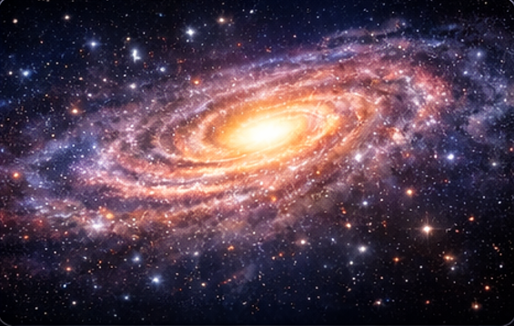

กาแล็กซี คือ ระบบขนาดมหาศาลที่ประกอบด้วยดาวฤกษ์ ดาวเคราะห์ ฝุ่น ก๊าซ เนบิวลา หลุมดำ และวัตถุท้องฟ้าอื่น ๆ จำนวนมาก ทุกสิ่งเหล่านี้รวมตัวกันด้วยแรงโน้มถ่วง กาแล็กซีหนึ่งแห่งอาจมีดาวฤกษ์ตั้งแต่หลายล้านดวงไปจนถึงหลายแสนล้านดวง